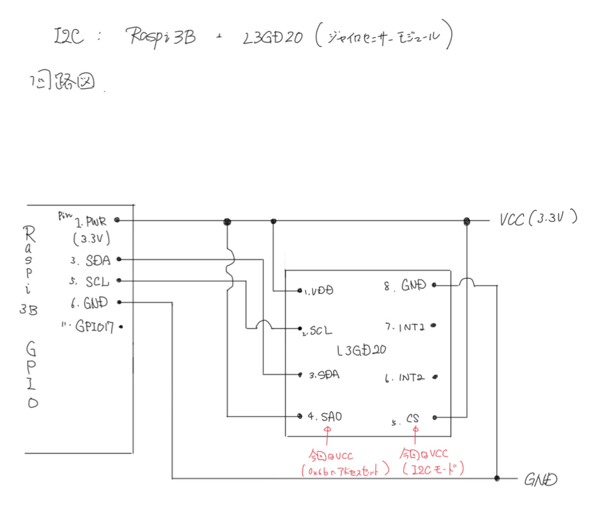
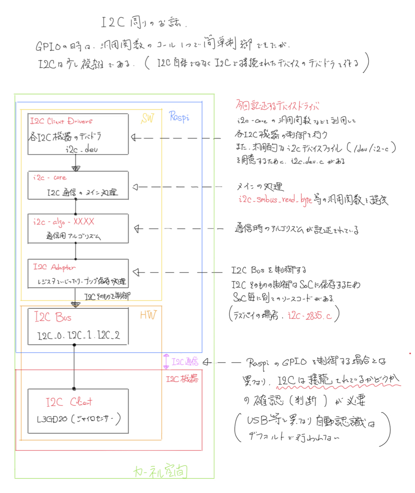
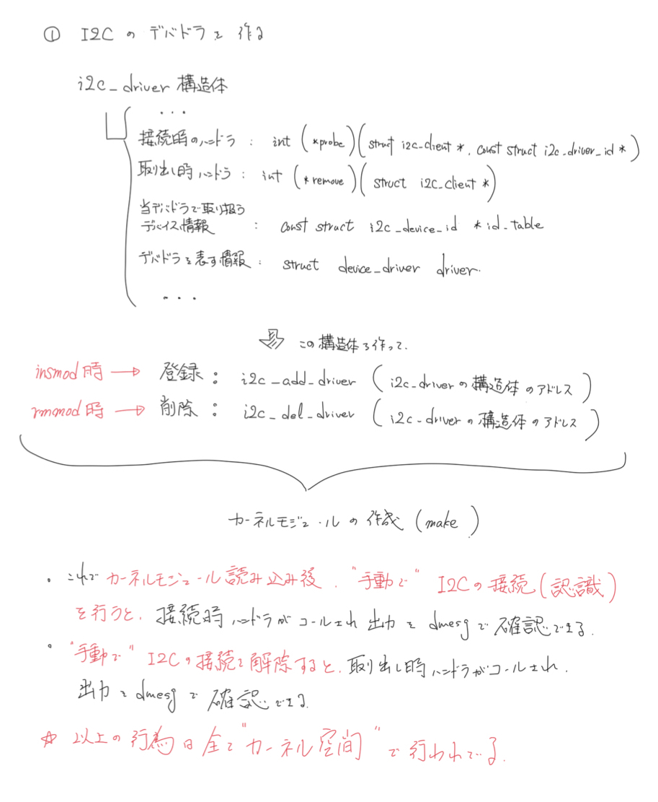
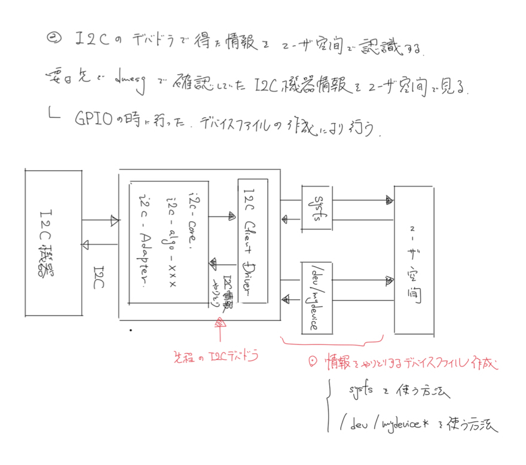
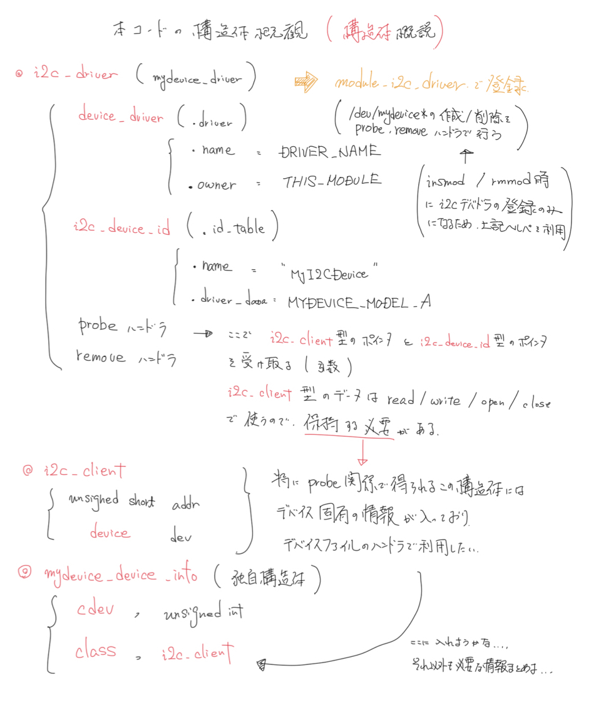
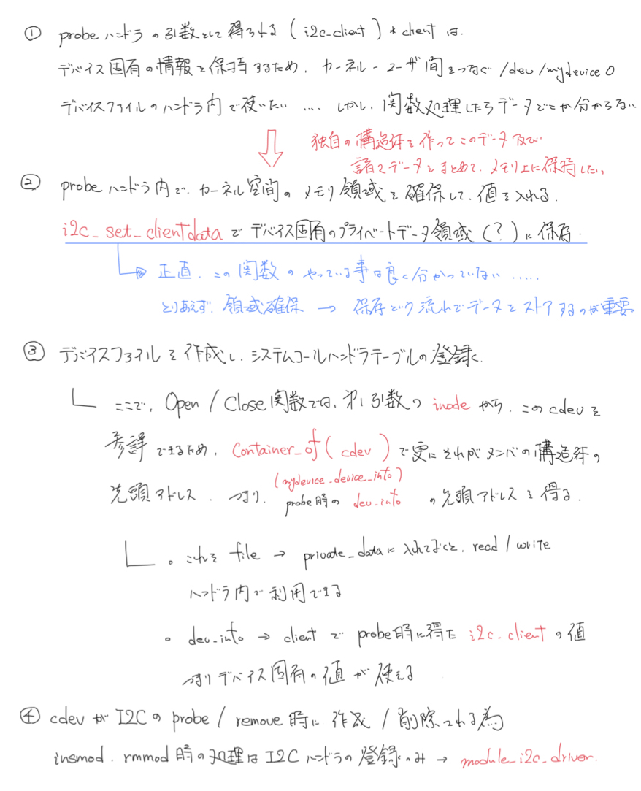

10.I2C Device Driver¶
参考URL
前回, GPIO制御関数を使ってLED/ボタンを制御するデバイスドライバを作成した. 今回はI2Cで接続されたデバイスのデバイスドライバを作成する. I2Cそのもののデバイスドライバではないので注意. 前回GPIOと同様に, I2Cデバドラ自体は SoC メーカーなどが実装したものが用意されている. そしてそのデバイスドライバは <linux/i2c.h> で宣言されている標準的な関数で呼ぶことができる. そのため, これを積極的に利用することで, 移植性, 汎用性, 信頼性が高まる.
(ここからは手元にあるものなので少し内容は異なる) 対象ボードとしてはRaspberry Pi 3. 対象I2Cデバイスはジャイロセンサー(L3GD20)として説明する. (今回はデバイスIDの取得しか行わないのでデバイス制御が目的ではなくデバイス自体は重要ではない). これはシンプルに通信確認だけをしたいためである. 以下の情報だけ事前に固定する. (ここの情報は上記サイトとL3GD20センサの取説を突き合わせている)
- ラズパイのI2C_1とL3GD20のSCL, SDAを接続する.
- L3GD20のスレーブアドレスは0x6b (もしくは0x6a, これは取説と回路参照)
- L3GD20のデバイスIDを読むには, 0x0F番地のレジスタを読む. 正しく読めたら0xD4が読み取れる.
接続の回路に関してはL3GDの取説を参照する. ピンが8つあり, 1がVCC(2.4~3.6V), 2がSCL, 3がSDA, 4がスレーブアドレス下位ビット選択でVDDに接続すると(0b)1101011(0x6b), GNDに接続すると(0b)1101010(0x6a)になる.(I2Cの場合は必ずどちらかに接続する/今回はVCCに接続した), 5はCS(VDDに接続するとI2Cモード/VCCに接続), 6, 7はインターラプト(今回は不要), 8はGNDである. そのため下図のような接続でいいだろう.
事前準備と確認(ラズパイ用)¶
ラズパイにssh接続し,
sudo raspi-config
>> I2Cをenabledにする.
sudo apt-get install -y i2c-tools
で設定Windowが開くため, そこで「Interfacing Options」 -> 「I2C」でenableにする. ついで, I2C関係のコマンドを利用できるように必要なツールをインストールする.
正しく回路を接続した状態で, i2cdetect -y 1 でデバイスの情報が読めればOK! (ここではデバイスのアドレスビット, つまり上述した0x6a/0x6bのどちらかが読めていればよい). この状態で, i2cget -y 1 0x6b 0x0f b を打ち込むと, 0xd4が読めるはずである(最後のbは省略可能. i2cget コマンドヘルプで分かる)
i2cdetect -y 1
>> .... (6bが見えればOK)
i2cget -y 1 0x6b 0xff b
>> 0xd4
I2C周りの話¶
GPIOのように, 関数コール一つで簡単に制御できればいいが, I2Cの場合は少し複雑である. いくつか事前知識が必要になる.
I2Cデバイスの制御は, 複数の階層に分かれたモジュール達によって実現されている. ハードウェアから見ていく. まず, I2Cそのものがある(I2C Bus). Raspberry Piの場合は, I2Cは全部で3つあり, それぞれI2C_0, I2C_1, I2C_2で, 別々のI2Cバスになる. それぞれのバスにつながった, I2C機器がある. 例えば, I2C_1のバスにジャイロセンサ(L3GD20, アドレス0x6b)が接続されたら, それは一つのI2C Clientになる.
ソフトウェア側から下を見ていく. まず, I2C Busを制御するI2C Adapterがある. I2Cそのものの制御はSoCに依存する処理のため, SoC毎に別々のソースコードがある. ラズパイの場合, i2c-bcm2835.cになる. また, 通信時に用いられるアルゴリズムが書かれたi2c-algoがある. i2c-core.cがメインの処理で, i2c_smbus_read_byte() といった汎用的な関数を提供する. I2C Client Driversがその, i2c_smbus_read_byte() などを利用して, 各I2C機器の制御を行う. また, 汎用的なi2cデバイスファイル(/dev/i2-c)を用意するために, i2c-dev.cがある. これらは全てカーネル側のコードである.
| レイヤ | 名称 | 説明 |
| SoftWare | I2C Client Drivers | 各I2C機器のデバイスドライバ, i2c-dev |
| i2c-core | I2C通信のメイン処理 | |
| i2c-alog-XXX | 通信用アルゴリズム | |
| I2C Adapters | I2Cそのものを制御する所. レジスタをいじったり, チップ依存の処理 | |
| HardWare | I2C Bus | 例えば, I2C_0 I2C_1 |
| I2C Client | 各I2C機器(ex. ジャイロセンサ(L3GD20)) |
今回我々が作るのは, 上記の表にあるI2C Client Driver, 具体的にはI2C接続されたジャイロセンサー(L3GD20)のデバイスドライバである. そのため, 「i2c-coreの関数を呼ぶだけでは?」と思うかもしれないが, そう簡単にはいかない. ひとまず今は上の表の関係を理解しておくといい.
整理¶
コードの記述に入る前にここまでの話を整理しておく.
まず, これまでラズパイのGPIOのデバイスドライバを書いてきた. これはラズパイのARMのレジスタを操作することで, GPIOの状態を変化させる行為である. デバイスドライバをカーネル空間で動作させ, それをユーザ空間のプロセスが実行できるようにデバイスファイル(/dev/mydevice*)を作成してハンドラ関数を登録するという流れのもので, ユーザ空間のプロセスはそのデバイスファイルに対してシステムコールを行うことで, そこに登録されたハンドラ(カーネル空間で動作するため, 物理アドレスへのフルアクセスが可能)が処理され, レジスタ値を操作するというものであった.
第5回では, ARMのレジスタ操作に関係するハンドラ関数を記述する場合に, レジスタのアドレスを直接指定して値を書き換えるという芸当を行った. ここでは, 物理アドレスと論理アドレスのマッピングの話なども行った. デバイスファイルに対する処理をユーザプロセスから行うプログラムの作成は行っていないが, そのかわりにデバイスファイルに対して, read/writeの変わりに cat/echo を利用して動作の確認を行ったわけである.
第9回では, 第5回のコードの汎用化を行った. すなわち第5回のようなコードはチップ特有のコードであり, GPIOの処理が抽象化できていないため(例えば, このラズパイのGPIO操作は同じGPIO操作であってもArduino上で動作できないということ), インターフェース(linix/gpio.h)を利用することで汎用化したわけである. これ以外の処理は第5回と同じ(というかより第5回の処理が基本である)ため, ここでは説明を省略する.
さて, ここで今回である. 今回は「ラズパイのGPIOで(I2Cで)接続されたI2C機器(L3GD20)のレジスタの情報をユーザ空間のプロセスから取得できるようにする」というのが目的である. そのため, これまでのようにGPIOのレジスタの値の書き換えを行うハンドラを登録したデバイスファイルの設定の他に, I2C機器からデータを取得する関係のハンドラやI2C機器を認識させる関係のコードを書く必要がある. これらを以降順番に見ていく.
下図に簡単ではあるが図解を示しておく.
簡単なI2C機器のデバイスドライバ¶
まずは, デバイスファイルの作成は行わず, デバイスドライバがロード/アンロードされたときに, I2C機器を登録/解除するコードを実行し, I2C機器が接続された時/取り除かれた時にハンドラを実行させ, 動作結果をprintkするようなコードを見る.
本コードの外観としては.
- デバイスドライバで取り扱うI2Cデバイスを識別するためのテーブル構造体を作成し登録する(I2Cデバイスは複数接続されることがあるため).
- I2Cデバイスが接続された時/取り除かれたときに実行するハンドラ関数をそれぞれ定義し, 先程のテーブル構造体やその他情報とともにI2Cデバイスドライバの構造体のメンバにする.
- これまで通り, デバドラがロード(insmod)/アンロード(rmmod)された際に呼ばれるハンドラを定義し, その内部の処理で2で作成したI2Cデバイスドライバの登録/削除を行う.
という流れである. また, 実行の際には,
- make で本コードからカーネルモジュールを作成.
- insmodコマンドでカーネルモジュールの登録.
- I2C機器の認識を手動で行う(通常, 自動で行われない)
- 動作確認 (dmesg)
- I2C機器の取り外しを手動で行う(通常, 自動で行われない)
- rmmmodコマンドでカーネルモジュールの登録を削除.
以降, コード詳細に移る.
一番基本的な, I2C機器のデバドラコードが下記になる. コード下部から見ていくと, mydevice_init(), mydevice_exit() が本デバイスドライバがロード(insmod)/アンロード(rmmod)されたときの処理であり, その中で, i2c_add_driver(), i2c_del_driver() を, 引数にI2Cデバイスドライバ構造体を与える形で呼んでいる.
I2Cは「 バス 」で接続するインターフェースであるため, デバドラがロードされているからといって, 常に対象となるI2C機器が接続されているとは限らない. そのため, I2Cバスに機器が接続/切断された場合の処理が必要になる. その時の処理などを登録/解除するのが i2c_add_driver() と i2c_del_driver() になる. 登録するテーブルの型は struct i2c_driver になる. このデバドラでサポートするI2C機器の情報を .id_table に登録する. 登録内容は先頭の方で宣言している, struct i2c_device_id mydevice_i2c_idtable[] になる. 第一メンバーが対応するデバイス名になる. カーネルはこの名前で対応するデバドラを検索するため, 非常に重要なメンバである(ユニーク番号などではない!). 第二メンバーはこのデバドラ内で使うプライベートデータになる. 何でも良いが通常は識別用番号(数字)を入れる. カーネルがI2C機器から接続/切断のときに呼ぶ関数 .probe, .remove に登録する. .driver にはこのデバドラの名前などを登録する.
mydevice_i2c_probe() 内で, i2c_smbus_read_byte_data() 関数を呼んで, 認識されたI2C機器と通信している. 今回の場合は, L3GD20が接続されたとしているので, 0x0F番地の値(機器ID, WHO_AM_I)を読む. i2c_smbus_read_byte_data() に渡す第一引数は, struct i2c_client で, その中にI2Cバス情報(使用するI2C Adapter)やスレーブアドレスを格納する. これらの情報は, この関数 mydevice_i2c_probe() が呼ばれるときにもらえる.
以上, 概要の図に記載する. これを見ながらコードを眺めるといい.
/*
* I2C Device Driver
*
* Date : 2018.08.24
* @author Mikiya Michishita
*/
#include <linux/module.h>
#include <linux/i2c.h>
// Device Information
MODULE_LICENSE("Dual BSD/GPL");
#define DRIVER_NAME "MyDevice"
// このデバイスドライバで取り扱うデバイスを識別するテーブルを登録する.
// 重要なのは最初のnameフィールド. これでデバイス名を決める.
// 後ろはこのドライバで自由に使えるデータ
static struct i2c_device_id mydevice_i2c_idtable[] = {
{"MyI2CDevice", 0},
{}
};
MODULE_DEVICE_TABLE(i2c, mydevice_i2c_idtable);
static int mydevice_i2c_probe(struct i2c_client *client, const struct i2c_device_id *id)
{
printk("i2c_lcd_probe\n");
printk("id.name = %s, id.driver_data = %ld\n", id->name, id->driver_data);
printk("slave address = 0x%02X\n", client->addr);
// 通常はここで, このデバドラでサポートしているデバイスかチェックする.
int version;
// I2C接続されている, L3GD20のWHO_AM_I の呼び出し
version = i2c_smbus_read_byte_data(client, 0x0f);
printk("id = 0x%02X\n", version);
return 0;
}
static int mydevice_i2c_remove(struct i2c_client *client)
{
printk("mydevice_i2c_remove\n");
return 0;
}
static struct i2c_driver mydevice_driver = {
.driver = {
.name = DRIVER_NAME,
.owner = THIS_MODULE,
},
.id_table = mydevice_i2c_idtable, // このデバドラがサポートするI2Cデバイス
.probe = mydevice_i2c_probe, // 対象とするI2Cデバイスが認識された時に呼ばれる処理
.remove = mydevice_i2c_remove, // 対象とするI2Cデバイスが取り外されたときに呼ばれる処理
};
// ロード(insmod)時に呼ばれる関数
static int mydevice_init(void)
{
printk("mydevice_init\n");
// 本デバイスドライバを, I2Cバスを使用するデバドラとして登録する.
i2c_add_driver(&mydevice_driver);
return 0;
}
// アンロード(rmmod)時に呼ばれる関数
static void mydevice_exit(void)
{
printk("mydevice_exit\n");
i2c_del_driver(&mydevice_driver);
}
module_init(mydevice_init);
module_exit(mydevice_exit);
i2c_add_driver, i2c_driver, i2c_client, module_i2c_driver : i2c.h
device_driver(in i2c_driver structure) : device.h
i2c_del_driver, i2c_smbus_read_byte_data : i2c-core.h
i2c_device_id : mod_devicetable.h
MODULE_DEVICE_TABLE : module.h
Note : お決まりの処理を簡略化¶
I2C機器用のデバドラでは, ロード/アンロード時に行う処理は, 殆どの場合 struct i2c_driver を登録するだけである(上記のコードの様に). そのため, 以下のように簡略化できる.
module_i2c_driver(mydevice_driver);
今回は利用していないが試してみるといいだろう.
動かしてみる¶
以下のように, ビルド, ロードして, ログを見てみる.
make
sudo insmod MyDeviceModule.ko
dmesg
>> ....
>> [...] mydevice_init
ログを見ると, mydevice_init() が呼ばれただけで, mydevice_i2c_probe() が呼ばれていない. これは先に説明したとおり, mydevice_i2c_probe() は機器が認識されたときに呼ばれるのだが, 現時点では何のI2C機器も接続されていないためである. USBの場合は恐らく自動認識されるだろうが, I2Cの場合は手動で教えて上げる必要がある. /sys/bus/i2c/devices/i2c-1/new_device に値を書き込むことで, カーネルに新しいデバイスを認識させる. 本デバドラ用の危機が接続されたことにしたいので, 「MyI2CDevice」という名前のデバイスがスレーブアドレス(=0x6b)で接続されたことにする. このセットの情報が, 先程の表で見た「I2C Client」の実体である.
sudo bash -c 'echo MyI2CDevice 0x6b > /sys/bus/i2c/devices/i2c-1/new_device'
dmesg
>> ....
>> [...] mydevice_i2c_probe
>> [...] id.name = MyI2CDevice, id.driver_data = 0
>> [...] slave address = 0x6b
>> [...] id = 0xd4
>> [...] i2c i2c-1: new_device: Instantiated device MyI2CDevice at 0x6b
すると, 上のログのように, mydevice_i2c_probe() が呼ばれている. また, そのときに渡される client パラメータには, 実体化したI2C Clientの情報が入っていることが分かる. そして, その情報(client)を使って, 通信ができ, 正しいidを取得できていることが分かる.
Note1¶
今回は「’MyI2CDevice’という名前の危機を取り扱う」, と決めた. そのため, struct i2c_device_id テーブルに「MyI2CDevice」という名前を設定してカーネルに登録した. そして, 手動で「MyI2CDevice」というデバイスをカーネルに認識させたので, 本デバイスドライバの mydevice_i2c_probe() が呼ばれた. カーネルはあくまで名前だけで判断しているため, 他のデバイスと名前が被ってしまった場合などに, 間違った機器を制御しようとしてしまう可能性がある. mydevice_i2c_probe() の probe というところに注意してほしいが, この関数で本来やるべきことは, このデバドラでこの危機を取り扱うかどうかのチェックになる. もしも対応機器であれば0を返して, そうでなければ-1を返す. その確認のため, 通常はスレーブアドレスを確認したり, 通信して機器のIDやバージョン情報を取得したり刷る. 今回は決め打ちで常に0を返している.
Note2¶
機器の取り外しには以下のコマンドを使用する.
sudo bash -c 'echo 0x6b > /sys/bus/i2c/devices/i2c-1/delete_device'
これを実行した後, dmesgを確認すると, mydevice_i2c_remove() が呼ばれていることが確認できる.
コード上でI2C機器を認識される¶
警告
本コードは恐らく非推奨. 本来は 11. Add I2C Device to DeviceTree に記載されている方法を利用するのが良いらしい.
次に, 先程のコードに少し追加でコードを記述する. 先程「I2Cの認識/取りだし」を手動(new_deviceへの書き込み/delete_deviceへの書き込み)で行った. この部分を, デバイスドライバがカーネルモジュールとして登録されるタイミング(insmod時)と, 取り外されるタイミング(rmmod時)に自動で行うようにしてみる. (以下に先のコードの修正部分のみを記述する)
// 機器の認識を自動化するように mydevice_init を修正
static struct i2c_client *i2c_clie = NULL;
static int mydevice_init(void)
{
printk("mydevice_init\n");
// 本デバイスドライバを, I2Cバスを使用するデバドラとして登録する.
i2c_add_driver(&mydevice_driver);
// 動的にデバイスを作る.
// https://www.kernel.org/doc/Documentation/i2c/instantiating-devices
// I2C1に接続された, "MyI2CDevice" という名前で,
// スレーブアドレスが 0x6b のデバイスを作る.
struct i2c_adapter *i2c_adap;
i2c_adap = i2c_get_adapter(1);
struct i2c_board_info i2c_board_info = {
I2C_BOARD_INFO("MyI2CDevice", 0x6b)
};
i2c_clie = i2c_new_device(i2c_adap, &i2c_board_info);
i2c_put_adapter(i2c_adap);
return 0;
}
// 機器認識を自動化したため, アンロード時の関数にも少し手続きが必要
static void mydevice_exit(void)
{
printk("mydevice_exit\n");
i2c_del_driver(&mydevice_driver);
if (i2c_clie) i2c_unregister_device(i2c_clie);
}
module_init(mydevice_init);
module_exit(mydevice_exit);
この方法は, Linuxドキュメントにも記載されていたので, 実装自体はOKだが, 実装場所がよろしくない. どのような機器が接続されているかというのはボード依存の情報なので, board_bcm2835.c の bcm2835_init(void) あたりに書くべきである. さらに, i2c_register_board_info() を使ったほうがいいようである.
また, デバイスツリー(.dts)に記載する方法もあるようだ. これは 11. Add I2C Device to DeviceTree に詳細を記述しているのでそちらを本来参考にすべきである.
今回の話はくどいようだが非推奨のため, 関数に関する説明は省略する.
sysfsを使ったインターフェース¶
ここまでで, I2C機器の認識と最初の通信ができた. 続いて, ユーザ, あるいはユーザ空間のプログラムとのインターフェースを作成する. 基本的にはいつもどおり, デバイスファイルを使ったやり取りになる. まずは簡単にできるsysfsを使ったインターフェースを作る.
言葉では分かりづらいが下図を見ればわかるだろう.
sysfsについては, 07. interface for procfs で軽く触れた. この時は, モジュールのパラメータとして扱ったが, 今回は, I2C機器のパラメータとして取り扱う必要がある. 07. interface for procfs では, 一番簡単にパラメータを見せる方法として, module_params() というヘルパーマクロを使用して実装していたが, 今回はもう少し真面目に実装してみる.
機器ID(バージョン情報)を取得するだけの簡単なインターフェース(sysfsの実装)を考える. 順序は非常に簡単で,
- readされたときのハンドラ関数の定義 (get_version)
- 作成するデバイスファイルの属性設定 (DEVICE_ATTR)
- カーネルに登録 (device_create_file)
である. 1に関しては, get_version 関数の定義(これが DEVICE_ATTR でreadのハンドラとして登録される. writeのハンドラは今回NULL). 2のために, DEVICE_ATTR というヘルパーマクロを使用する. 3のために, device_create_file() 関数をprobeのタイミングで呼ぶ.
「version」というファイルを作成して, 呼んだときに get_version() という関数を呼ぶコードを下記に示す. DEVICE_ATTR の第1引数が作成するファイル名, 第二引数がアクセス権限, 第三引数がread時のハンドラ関数, 第四引数がwrite時のハンドラ関数である. 今回, write操作は行わないので, NULL指定しておく. read時のハンドラ関数に設定した get_version() では, 先程と同じく, 機器のID情報を呼んで, bufに詰めて返しているだけである.
I2C関数を使うためには, struct i2c_client の情報が必要だが, この関数には, struct device が渡されている. しかし, struct i2c_client の中にこの構造体が入っているので, container_of を i2c_client でラップした関数 to_i2c_client で簡単に取得できる. probeのタイミングで device_crate_file() を使用して登録する. 第一引数は同じく struct device , 第二引数は登録するファイルの属性一式になる. これは先程の DEVICE_ATTR マクロによって作られている. DEVICE_ATTR の第一引数に指定した名前に, “dev_attr_” というプレフィックスをつけたものを渡す.
static ssize_t get_version(struct device *dev, struct device_attribute *dev_attr, char *buf)
{
printk("get_version\n");
struct i2c_client *client = to_i2c_client(dev);
int version;
version = i2c_smbus_read_byte_data(client, 0x0f);
return sprintf(buf, "id=0x%02X\n", version);
}
static DEVICE_ATTR(version, S_IRUGO, get_version, NULL);
static int mydevice_i2c_probe(struct i2c_client *client, const struct i2c_device_id *id)
{
printk("mydevice_i2c_probe\n");
printk("id.name = %s, id.driver_data = %d\n", id->name, (int)(id->driver_data));
printk("slave address = 0x%02X\n", client->addr);
// 通常はここで, このデバドラでサポートしているデバイスかどうかチェックする
// このデバドラの属性読み書き用のsysfsファイルを作成.
device_create_file(&client->dev, &dev_attr_version);
return 0;
}
static int mydevice_i2c_remove(struct i2c_client *client)
{
printk("mydevice_i2c_remove\n");
device_remove_file(&client->dev, &dev_attr_version);
return 0;
}
その後, 以下のようにビルド, ロード, デバイスの認識を行う(デバイス認識の自動化をしている場合, ロードまででいいが). すると, /sys/devices/platform/soc/3f804000.i2c/i2c-1/1-006b/version というファイルが作成され, catで読むと, idが取得できていることが分かる.
DEVICE_ATTR, device_crate_file, device_remove_file : device.h
to_i2c_client : ./../../Library/Kernel/linux/i2c.h.rst container_of : kernel.h
/devを使ったインターフェース¶
sysfsだとお手軽に出来て便利だが, やはりいつものopen/close/read/write/ioctl(+select/poll/seekなど)を使いたい場合もあるだろう. そのためには, 今までどおりの方法でデバイスファイルを作る必要がある.
今まではロードのタイミングでデバイスファイルを作っていた(メジャー番号とかマイナー番号とか扱って, /dev/mydevice* を作る部分の実装)が, 今回はprobeのタイミングになる. また, I2C制御関数を使うためには, struct i2c_client が必要になる. probeのタイミングで貰った struct i2c_client をどこかに保持して, readやwriteのときに参照する必要がある. これはstatic変数で保持すれば簡単にできるが, 少し真面目にやってみる. これを実現するために, container_of() というヘルパーマクロを使う.
事前知識¶
container_of
container_of() は以下で定義されるヘルパーマクロで, コンパイル時に実行される. (kernel.h)
#define container_of(ptr, type, member) ({ \
const typeof(((type *)0)->member) *__mptr = (ptr); \
(type *)((char *)__mptr - offsetof(type, member)); })
#endif
type には構造体名, member にはその構造体のメンバ名を入れる. そして, ptr にはそのメンバの実際のポインタを入れる. すると, その ptr を格納する構造体の先頭アドレスを返してくれる.
i2c_set_clientdata
i2c_set_clientdata() は以下で定義される関数. struct i2c_client に紐付いた情報を自由に保存することができる. この情報は何でもいいが, 通常は, probe時にalloc下デバドラ独自の構造体へのポインタを保持する. 取り出すときは, i2c_get_clientdata() を使う. (i2c.h)
void i2c_set_clientdata(struct i2c_client *dev, void *data)
コード¶
probe時に貰った, struct i2c_client を, open/close/read/write時に参照できるようにしたコードが下記になる. コード全体を載せている.
構造体の包含関係は以下の図に示す. コードを読む参考にされたい.
/*
* I2C Device Driver
*
* これまでのコードの集大成
* 独自構造体などを利用しているが, やっていることはこれまでと同じ.
*
* Date : 2018.08.24
* @author Mikiya Michishita
*/
#include <linux/module.h>
#include <linux/i2c.h>
#include <linux/cdev.h> // cdev
#include <linux/device.h> // struct class (device class)
// Device Information
MODULE_LICENSE("Dual BSD/GPL");
#define DRIVER_NAME "MyDevice"
// dev/mydevice* で作成するデバイスファイルの数に関わる値
static const unsigned int MINOR_BASE = 0;
static const unsigned int MINOR_NUM = 1;
// I2Cデバイスの管理情報
// このデバドラで取り扱うI2Cデバイス
enum mydevice_i2c_model {
MYDEVICE_MODEL_A = 0,
MYDEVICE_MODEL_NUM,
};
// このデバドラで取り扱うデバイスを識別するテーブルを登録する.
static struct i2c_device_id mydevice_i2c_idtable[] = {
{"MyI2CDevice", MYDEVICE_MODEL_A},
{}
};
MODULE_DEVICE_TABLE(i2c, mydevice_i2c_idtable);
// 各i2cデバイス(client)に紐づく情報.
// probe時に設定して, i2c_set_clientdataで保持しておく.
//
// cdev : probeされたI2Cデバイス(client)とcdevを対応付けるために必要
// open時にcontainer_ofで探す
// mydevice_major : このデバイスドライバのメジャー番号(動的に決める)
// mydevice_class : デバドラのクラスオブジェクト
struct mydevice_device_info {
struct cdev cdev;
unsigned int mydevice_major;
struct class *mydevice_class;
struct i2c_client *client;
// 他に必要なら追加する, mutexとか
};
// /dev/mydevice* のopenハンドラ
static int mydevice_open(struct inode *inode, struct file *file)
{
printk("mydevice_open\n");
// このopenを持つcdev(inode->i_cdev)を持つmydevice_device_infoを探す
struct mydevice_device_info *dev_info;
dev_info = container_of(inode->i_cdev, struct mydevice_device_info, cdev);
if (dev_info == NULL || dev_info->client == NULL) {
printk (KERN_ERR "container_of\n");
return -EFAULT;
}
file->private_data = dev_info;
printk("i2c address = %02X\n", dev_info->client->addr);
return 0;
}
// /dev/mydevice* のcloseハンドラ
static int mydevice_close(struct inode *inode, struct file *file)
{
printk("mydevice_close");
return 0;
}
// /dev/mydevice* のreadハンドラ
static ssize_t mydevice_read(struct file *filp, char __user *buf, size_t count, loff_t *f_pos)
{
printk("mydevice_read\n");
struct mydevice_device_info *dev_info = filp->private_data;
struct i2c_client *client = dev_info->client;
int version;
version = i2c_smbus_read_byte_data(client, 0x0f);
return sprintf(buf, "id=0x%02X\n", version);
}
// /dev/mydevice* のwriteハンドラ
static ssize_t mydevice_write(struct file *filp, const char __user *buf, size_t count, loff_t *f_pos)
{
printk("mydevice_write\n");
return count;
}
// 各種システムコールに対応するハンドラテーブル
struct file_operations s_mydevice_fops = {
.open = mydevice_open,
.release = mydevice_close,
.read = mydevice_read,
.write = mydevice_write,
};
// /dev/mydevice* を作成する関数.
// I2Cデバイスが認識されたときに呼ばれるハンドラ内で呼ばれる.
static int mydevice_i2c_create_cdev(struct mydevice_device_info *dev_info)
{
int alloc_ret = 0;
int cdev_err = 0;
dev_t dev;
// メジャー番号を確保する
alloc_ret = alloc_chrdev_region(&dev, MINOR_BASE, MINOR_NUM, DRIVER_NAME);
if (alloc_ret != 0) {
printk(KERN_ERR "alloc_chrdev_region = %d\n", alloc_ret);
return -1;
}
// 取得したdev(=メジャー番号 + マイナー番号)
// メジャー番号を取得して保存
dev_info->mydevice_major = MAJOR(dev);
dev = MKDEV(dev_info->mydevice_major, MINOR_BASE); // 不要?
// cdev構造体の初期化とシステムコールハンドラテーブルの登録
cdev_init(&dev_info->cdev, &s_mydevice_fops);
dev_info->cdev.owner = THIS_MODULE;
// このデバイスドライバ(cdev)をカーネルに登録する.
cdev_err = cdev_add(&dev_info->cdev, dev, MINOR_NUM);
if (cdev_err != 0) {
printk(KERN_ERR "cdev_add = %d\n", alloc_ret);
unregister_chrdev_region(dev, MINOR_NUM);
return -1;
}
// このデバイスのクラス登録をする(/sys/class/mydevice/ を作る)
dev_info->mydevice_class = class_create(THIS_MODULE, "mydevice");
if (IS_ERR(dev_info->mydevice_class)) {
printk(KERN_ERR "class_create\n");
cdev_del(&dev_info->cdev);
unregister_chrdev_region(dev, MINOR_NUM);
return -1;
}
// /sys/class/mydevice/mydevice* を作る
for (int minor = MINOR_BASE; minor < MINOR_BASE + MINOR_NUM; minor++) {
device_create(dev_info->mydevice_class, NULL, MKDEV(dev_info->mydevice_major, minor), NULL, "mydevice%d", minor);
}
return 0;
}
// /dev/mydevice* を削除する関数.
// I2Cデバイスが取り除かれたときに呼ばれるハンドラ内で呼ばれる.
static void mydevice_i2c_delete_cdev(struct mydevice_device_info *dev_info)
{
dev_t dev = MKDEV(dev_info->mydevice_major, MINOR_BASE);
// /sys/class/mydevice/mydevice* を削除する
for (int minor = MINOR_BASE; minor < MINOR_BASE + MINOR_NUM; minor++) {
device_destroy(dev_info->mydevice_class, MKDEV(dev_info->mydevice_major, minor));
}
// このデバイスのクラス登録を取り除く(/sys/class/mydevice/を削除する)
class_destroy(dev_info->mydevice_class);
// このデバイスドライバ(cdev)をカーネルから取り除く
cdev_del(&dev_info->cdev);
// このデバイスドライバで使用していたメジャー番号の登録を取り除く
unregister_chrdev_region(dev, MINOR_NUM);
}
// I2Cデバイスが認識されたときに呼ばれるハンドラ
static int mydevice_i2c_probe(struct i2c_client *client, const struct i2c_device_id *id)
{
printk("mydevice_i2c_probe\n");
printk("id.name = %s, id.driver_data = %d\n", id->name, (int)(id->driver_data));
printk("slave address = 0x%02X\n", client->addr);
// 通常はここで, このデバドラでサポートしているデバイスかどうかチェック
// open/close/read/write でも i2c_clientは使うので, 保持する.
struct mydevice_device_info *dev_info;
dev_info = (struct mydevice_device_info*)devm_kzalloc(&client->dev, sizeof(struct mydevice_device_info), GFP_KERNEL);
dev_info->client = client;
i2c_set_clientdata(client, dev_info);
// このデバイスドライバをキャラクタ型としてカーネルに登録する.
// (/sys/class/mydevice/mydevice* を作る)
if (mydevice_i2c_create_cdev(dev_info)) return -ENOMEM;
return 0;
}
// I2Cデバドラが抜かれたときに呼ばれるハンドラ
static int mydevice_i2c_remove(struct i2c_client *client)
{
printk("mydevice_i2c_remove\n");
struct mydevice_device_info *dev_info;
dev_info = i2c_get_clientdata(client);
mydevice_i2c_delete_cdev(dev_info);
return 0;
}
// I2C用デバイスドライバ
static struct i2c_driver mydevice_driver = {
.driver = {
.name = DRIVER_NAME,
.owner = THIS_MODULE,
},
.id_table = mydevice_i2c_idtable,
.probe = mydevice_i2c_probe,
.remove = mydevice_i2c_remove,
};
// 本デバドラを, I2Cバスを使用するデバドラとして登録する.
// これまで作成していた mydevice_init/mydevice_exit を作っても
// やることがI2Cバスを利用するデバドラの登録なので,
// 簡易化する関数を利用する.
module_i2c_driver(mydevice_driver);
コードの先頭で, struct mydevice_device_info という独自構造体を定義し, struct_i2c_client, つまり, 各I2Cデバイス(クライアント)に紐づく(struct i2c_client が与えられたら, 格納した情報(struct mydevice_device_info) を取得できる)情報を格納する.
今回, I2Cデバイスが接続されるたび, つまり, probeのタイミングで新しいデバイスファイル(cdev)を作ることにする. これは, 今までロード時にやっていたのと全く同じ処理. デバイスファイル作成処理では mydevice_i2c_create_cdev() 関数に抽出している. 今までは, struct cdev cdev;, unsigned int mydevice_major;, struct class *mydevice_class; は, staticで保存していたが, 今回は struct mydevice_device_info 構造体内に入れ, probeのタイミングで devm_kzalloc で動的に領域確保する. devm_kzalloc を使うことで, デバイスが消えたタイミングでこのメモリを自動的に開放してくれる. また, 同じ struct mydevice_device_info 構造体の中に, I2C制御に必要な struct i2c_client も保存しておき, この struct mydevice_device_info 構造体を i2c_set_clientdata() によって, I2Cクライアントに関連付けられた領域に保存する. これらの処理は, すべて機器が接続されたタイミング(mydevice_i2c_probe())で行う.
mydevice_i2c_probe() 内で, キャラクタ型デバイスファイル(cdev)を作ったので, open/close/read/writeが使える. まず, mydevice_open() を見る. 第一引数 struct inode *inode 内に, cdevへのポインタが格納されており, inode->i_cdev で参照できる. 先程, probeのタイミングでデバイスファイルを作成するときに, cdevは独自構造体 struct mydevice_device_info 内に保存した. そのため, container_of を使用して, このcdevが格納されている構造体の先頭アドレスを求めることができる(dev_info = container_of(inode->i_cdev, struct mydevice_device_ino, cdev);). そして, この中に struct i2c_client の情報も入れたので, これを使ってI2C制御が可能となる. 実際には, read/write時に使うので, さらに file 構造体内の private_data に入れて, read/writeのタイミングで参照できるようにしている.
devm_kzalloc : device.h
以下, 本コードの簡易図解
 動かしてみる¶
以下のように, ビルド, ロードして, I2C機器を認識させる. すると, /dev/mydevice0 が作成されている. そして, このデバイスをcatで読むと, mydevice_read() 関数が呼ばれて, その中でI2C通信して, ID値を返していることが分かる.
make
sudo insmod MyDeviceDriver.ko
sudo bash -c 'echo MyI2CDevice 0x6b > /sys/bus/i2c/devices/i2c-1/new_device'
ls /dev/mydevice0
>> /dev/mydevice0
cat /dev/mydevice0
>> id = 0xD4
>> id = 0xD4
>> ...
用語解説¶
SoC (System on a Chip)